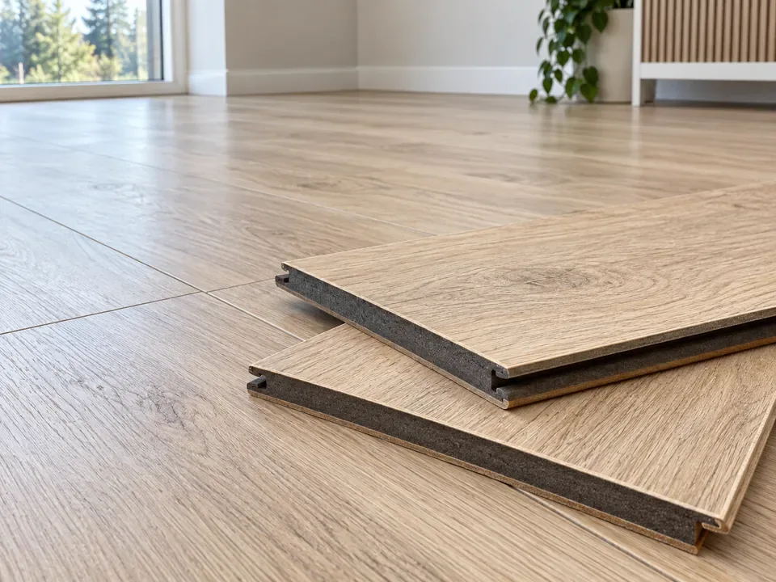

Tallinn ja Harjumaa
Laminaadi paigaldus.
Läbimõeldud kihid.
Õige alusmaterjal, kuiv aluspõrand ja piisav paisumisruum aitavad luua stabiilse ning mugava põranda.

Mida enne paigaldust
kontrollida?
Aklimatiseerimine
Pakendeid hoitakse samas ruumis tootja määratud aja ja tingimuste järgi. Paljude toodete puhul on tavapärane vähemalt 48 tundi.
Alusmaterjal ja niiskustõke
Aluskate valitakse põrandakatte, aluspinna, heliisolatsiooni ja põrandakütte järgi. Mineraalse aluspinna puhul võib olla vajalik aurutõke.
Paisumisruum ja rasked esemed
Ujuv põrand peab saama liikuda. Tootja nõutud vahe jäetakse seinte, torude ja fikseeritud osade ümber. Köögisaar ei tohi põrandat kinni suruda.
Küsimused ja vastused
Parketitööd.
Selged vastused.
Kus parketitöid tehakse?
Parketi ja laminaadi paigaldust, aluspinna ettevalmistust ning parketi parandustöid pakume Tallinnas ja Harjumaal. Objekti asukoht ja tööde ulatus täpsustatakse päringus.
Millest kujuneb parketi paigalduse hind?
Hind sõltub pindalast, paigaldusmustrist, aluspinna seisukorrast, vana katte eemaldamisest, liistudest ja üleminekutest. Täpne hind ja töömaht lepitakse kokku pakkumises.
Kas laminaati võib paigaldada põrandaküttele?
Sobivus sõltub konkreetsest põrandakattest ja alusmaterjalist. Kontrollida tuleb tootja lubatud temperatuuri, soojustakistust ning aluspinna niiskust.
Kui kaua peab materjal enne paigaldamist ruumis seisma?
Aklimatiseerimise aeg sõltub tootja juhendist. Paljude laminaatide puhul on tavapärane vähemalt 48 tundi, kuid määrav on konkreetse toote juhend ja ruumi sisekliima.
Kas kriimustatud parkett tuleb välja vahetada?
Üksiku täkke või lohu korral võib sobida kuumvahaga kohtparandus. Kulunud viimistlusega puitparketti saab mõnikord lihvida; võimalus sõltub kulumiskihi paksusest ja põranda seisukorrast. Laminaati ja LVT-d ei lihvita.
Mida hinnapäringusse lisada?
Lisa pindala, põrandakatte tüüp, objekti asukoht, soovitud aeg ning ruumi ja aluspinna fotod. Kahjustuse puhul lisa üldvaade ja lähivõte. Fotod saad edastada e-postiga.
Sinu kodu järgmine samm
Hea põrand algab
heast plaanist.
Räägi oma ruumist ja soovitud põrandast.
Aitame lähteülesande selgeks teha.
Päringu saad praegu tekstifailina alla laadida.